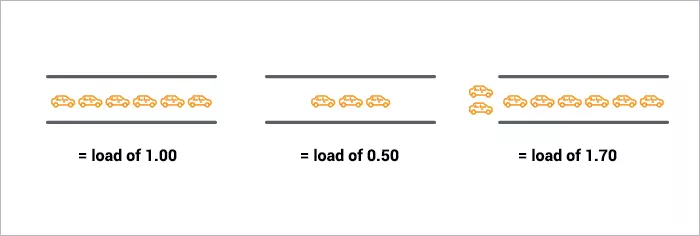

CPULoad指标理解
我们经常去看Linux的平均负载。
通过uptime、top、w、cat /proc/loadavg命令就可以显示出
/proc文件系统是一个虚拟的文件系统，不占用磁盘空间，它反映了当前操作系统在内存中的运行情况，查看/proc下的文件可以了解到系统的运行状态。查看系统平均负载使用“cat /proc/loadavg”命令，输出结果如下
[root@VM_45_100_centos logs]# cat /proc/loadavg
0.04 0.16 0.20 2/537 29710
前三个数字是1、5、15分钟内的平均进程数。后面的 2/537 一个的分子是正在运行的进程数，分母是进程总数；另一个是最近运行的进程ID号。
通过top获取到平均负载的内容如下：
load average: 0.09, 0.05, 0.01
系统平均负载被定义为：在特定时间间隔内运行队列中(在CPU上运行或者等待运行多少进程)的平均进程数。
如果一个进程满足以下条件则其就会位于运行队列中,运行队列嘛，没有等待IO，没有WAIT，没有KILL的进程通通都进这个队列。
- 它没有在等待I/O操作的结果
- 它没有主动进入等待状态(也就是没有调用'wait')
- 没有被停止(例如：等待终止)
我们可以这样认为，就是正在运行的进程+准备好等待运行的进程在特定时间内（1分钟，5分钟，10分钟）的平均进程数
在Linux中，进程分为三种状态
- 一种是阻塞的进程blocked process，
- 一种是可运行的进程runnable process，
- 另外就是正在运行的进程running process。当进程阻塞时，进程会等待I/O设备的数据或者系统调用。
进程可运行状态时，它处在一个运行队列run queue中，与其他可运行进程争夺CPU时间。 系统的load是指正在运行running one和准备好运行runnable one的进程的总数。比如现在系统有2个正在运行的进程，3个可运行进程，那么系统的load就是5，load average就是一定时间内的load数量均值
大多数人都对平均负载有所了解：三个数字分别代表了一分钟，五分钟和十五分钟三个时间段内的CPU负载的平均值，而数字越低越好。数字越高表示系统出现了问题或机器过载。但是负载值多少才最合适？谁也说不清楚。
首先，我们从最简单的单核处理器的系统进行说明。
CPU负载有点类似于交通拥堵程度
单核CPU就像一条单行道。想象您是一名交警.有时这条单行道太忙了，有汽车在排队等待同行。想让人们知道这条路的交通如何。最直接的指标是就是在特定时间内，这条道路上等待多少辆汽车。如果没有汽车在等待，即将到来的驾驶员便知道他们可以马上驶过。如果有汽车在排队等候，则驾驶员就知道知道要耽误时间了。
所以，交警同志，你应该怎样去定义交通拥塞程度的？可以按照下面的规则：
- 0.00表示路上根本没有车。实际上，介于0.00和1.00之间都表示没有交通拥堵，到达的汽车可以直接同行。
- 1.00表示道路完全处于满负荷状态。一切都还不错，但是如果再增加一辆汽车，将会产生交通堵塞。
- 超过1.00表示有交通堵塞。2.00意味着当前的汽车总量需要两条车道才能保证不堵塞。 3.00意味着当前的汽车总量需要三条车道才能保证不堵塞。

这基本上就是CPU负载的含义。 “汽车”是指使用CPU时间（“通行”）或排队使用CPU的进程。
Unix将CPU负载定义为运行队列的长度：当前正在运行的进程数与正在等待（排队）的进程数之和。
就像交警一样，您希望您的汽车/进程永远不会等待。因此，理想情况下，您的CPU负载应保持在1.00以下。如果系统的负载暂时获得高于1.00的峰值，还是可以的，但是负载您始终高于1.00时，则需要进行处理了。
CPU load的理想值是1.0？
其实不然，当CPU的 load为1.00的时候，你的系统处于满负荷运转，再来一个进程，就会高于1.00，你的系统的性能将会降低，所以系统没有流出余粮,实际工作中，很多系统管理员认为比较理想的CPU负载应该是0.7，因此我们针对线上CPU负载的处理规则如下：
- 0.70:需要注意并排查原因。如果平均负载保持在>0.70以上，那么应该在情况变得更糟之前进行调查。
- 1.00:不紧急，需要处理。如果平均负载保持在1.00以上，需要查找问题原因并立即解决。否则，你的服务器可能在任何时候出现性能问题。
- 5.0:紧急状态，立即处理。如果平均负载高于5.00，那么你的系统马上就要崩溃了，很有可能系统挂机或者hang死。因此需要立即处理这种情况，千万不要让你的系统负载达到5！
多处理器？CPU负载为3：但是运行良好！
对于四处理器系统，3.00的负载表示比较健康。
在多处理器系统上，负载是相对于可用处理器核心数量的。在单核系统上，“ 100％利用率”表示负载为1.00，在双核系统上是2.00，在四核系统上是4.00，依此类推。
如果再回到交通问题上，“1.00”实际上意味着“一个车道的交通承载量”。在单车道上，这意味着它已被填满。在单向双车道上，负载为1.00表示其交通容量只有50％时-只有一个车道占用，因此还有另一个完整车道可以使用。
与CPU相同：在单核服务器上1.00的负载表示CPU利用率为100％。在双核服务器上，负载为2.00才代表100％CPU使用率。
多核（multicore） 与 多处理器（multiprocessor）
出于性能目的，具有单个双核处理器的计算机是否基本上等同于具有两个具有一个内核的处理器的计算机？是的。大致上是一样的。但是还有很多其他微妙之，例如：高速缓存的数量，处理器之间的进程切换频率等。尽管多处理器有这些优点，但为了对于CPU负载值来说，CPU Core的总数是很重要的，因为无论怎样CPU Core是物理隔离的。
因此我们需要添加两条新的CPU 负载处理规则：
- “核数=最大负载”：在多核系统上，您的负载不应超过可用核数。
- “Core就是Core”的经验法则：CPU Core的性能与CPU上的分布方式无关。两个四核==四个双核==八个单核。他们的性能与八个Core的性能等同。
总结
我们看下uptime命令的输出:
~ $ uptime
23:05 up 14 days, 6:08, 7 users, load averages: 0.65 0.42 0.36
这是在双核CPU的系统上运行的，所以，我们的负载还有很大的空闲资源。在负载达到并保持在1.4左右之前，我不需要做处理。
现在，那三个数字什么含义呢？ 0.65是最近一分钟的平均值，0.42是最近五分钟的平均值，而0.36是最近15分钟的平均值。这使我们想到了一个问题：
我应该观察哪个平均值？ 1、5或15分钟？
根据我们前面讨论过的处理规则（1.00 =进行处理，依此类推），您应该查看5或15分钟的平均值。坦白说，若一分钟的CPU 负载值达到1，还是可以的。但是若15分钟的负载平均值都在1.0以上，那么你需要进行干预和处理了。（当然，对于多核处理器的系统，该值将变为1.0*CPU核心数目）。
因此，核数对于解释平均负载非常重要。
我如何知道我的系统有多少个核？
cat /proc/cpuinfo 可以获得系统的CPU信息。
若只想得到CPU核数，可以运行：grep 'model name' /proc/cpuinfo | wc -l